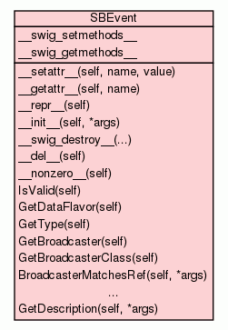

Class SBEvent
source code

API clients can register to receive events.
For example, check out the following output:
Try wait for event...
Event description: 0x103d0bb70 Event: broadcaster = 0x1009c8410, type = 0x00000001, data = { process = 0x1009c8400 (pid = 21528), state = running}
Event data flavor: Process::ProcessEventData
Process state: running
Try wait for event...
Event description: 0x103a700a0 Event: broadcaster = 0x1009c8410, type = 0x00000001, data = { process = 0x1009c8400 (pid = 21528), state = stopped}
Event data flavor: Process::ProcessEventData
Process state: stopped
Try wait for event...
Event description: 0x103d0d4a0 Event: broadcaster = 0x1009c8410, type = 0x00000001, data = { process = 0x1009c8400 (pid = 21528), state = exited}
Event data flavor: Process::ProcessEventData
Process state: exited
Try wait for event...
timeout occurred waiting for event...
from test/python_api/event/TestEventspy:
def do_listen_for_and_print_event(self):
'''Create a listener and use SBEvent API to print the events received.'''
exe = os.path.join(os.getcwd(), 'a.out')
# Create a target by the debugger.
target = self.dbg.CreateTarget(exe)
self.assertTrue(target, VALID_TARGET)
# Now create a breakpoint on main.c by name 'c'.
breakpoint = target.BreakpointCreateByName('c', 'a.out')
# Now launch the process, and do not stop at the entry point.
process = target.LaunchSimple(None, None, os.getcwd())
self.assertTrue(process.GetState() == lldb.eStateStopped,
PROCESS_STOPPED)
# Get a handle on the process's broadcaster.
broadcaster = process.GetBroadcaster()
# Create an empty event object.
event = lldb.SBEvent()
# Create a listener object and register with the broadcaster.
listener = lldb.SBListener('my listener')
rc = broadcaster.AddListener(listener, lldb.SBProcess.eBroadcastBitStateChanged)
self.assertTrue(rc, 'AddListener successfully retruns')
traceOn = self.TraceOn()
if traceOn:
lldbutil.print_stacktraces(process)
# Create MyListeningThread class to wait for any kind of event.
import threading
class MyListeningThread(threading.Thread):
def run(self):
count = 0
# Let's only try at most 4 times to retrieve any kind of event.
# After that, the thread exits.
while not count > 3:
if traceOn:
print('Try wait for event...')
if listener.WaitForEventForBroadcasterWithType(5,
broadcaster,
lldb.SBProcess.eBroadcastBitStateChanged,
event):
if traceOn:
desc = lldbutil.get_description(event))
print('Event description:', desc)
print('Event data flavor:', event.GetDataFlavor())
print('Process state:', lldbutil.state_type_to_str(process.GetState()))
print()
else:
if traceOn:
print 'timeout occurred waiting for event...'
count = count + 1
return
# Let's start the listening thread to retrieve the events.
my_thread = MyListeningThread()
my_thread.start()
# Use Python API to continue the process. The listening thread should be
# able to receive the state changed events.
process.Continue()
# Use Python API to kill the process. The listening thread should be
# able to receive the state changed event, too.
process.Kill()
# Wait until the 'MyListeningThread' terminates.
my_thread.join()
|
|
|
|
|
|
|
|
|
|
|
__init__(self,
*args)
__init__(lldb::SBEvent self) -> SBEvent __init__(lldb::SBEvent
self, SBEvent rhs) -> SBEvent __init__(self, int type, str data)
-> SBEvent (make an event that contains a C string) |
source code
|
|
|
|
__swig_destroy__(...)
delete_SBEvent(SBEvent self) |
|
|
|
|
|
|
|
|
|
|
IsValid(self)
IsValid(SBEvent self) -> bool |
source code
|
|
|
|
GetDataFlavor(self)
GetDataFlavor(SBEvent self) -> str const * |
source code
|
|
|
|
GetType(self)
GetType(SBEvent self) -> uint32_t |
source code
|
|
|
|
GetBroadcaster(self)
GetBroadcaster(SBEvent self) -> SBBroadcaster |
source code
|
|
|
|
GetBroadcasterClass(self)
GetBroadcasterClass(SBEvent self) -> str const * |
source code
|
|
|
|
BroadcasterMatchesRef(self,
*args)
BroadcasterMatchesRef(SBEvent self, SBBroadcaster broadcaster) ->
bool |
source code
|
|
|
|
|
|
|
GetDescription(self,
*args)
GetDescription(SBEvent self, SBStream description) -> bool |
source code
|
|
|
Inherited from object:
__delattr__,
__format__,
__getattribute__,
__hash__,
__new__,
__reduce__,
__reduce_ex__,
__sizeof__,
__str__,
__subclasshook__
|
|
|
GetCStringFromEvent(*args)
GetCStringFromEvent(SBEvent event) -> str const * |
source code
|
|
|
|
__swig_setmethods__ = {} |
|
|
__swig_getmethods__ = {}
|
|
Inherited from object:
__class__
|
|
x.__setattr__('name', value) <==> x.name = value
- Overrides:
object.__setattr__
- (inherited documentation)
|
|
repr(x)
- Overrides:
object.__repr__
- (inherited documentation)
|
|
__init__(lldb::SBEvent self) -> SBEvent __init__(lldb::SBEvent
self, SBEvent rhs) -> SBEvent __init__(self, int type, str data) ->
SBEvent (make an event that contains a C string)
- Overrides:
object.__init__
|